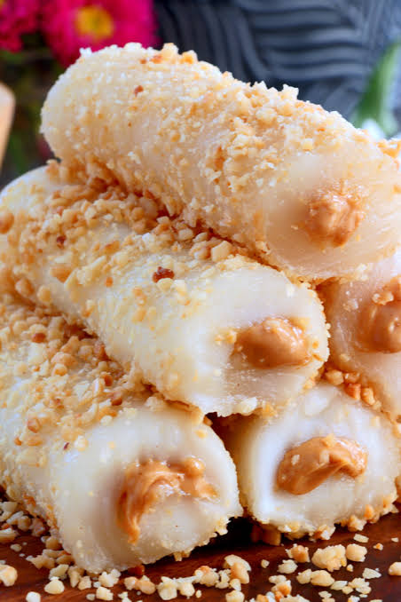

Home
Filipino Peanut Roll

Ingredients
- 1 cup roasted unsalted peanuts (finely crushed)
- 1/3 cup brown sugar
- 15-20 pieces small lumpia (spring roll) wrappers
- 1 cup cooking oil
- 2 tablespoons brown sugar
- 2 tablespoons water (or beaten egg)
Step by Step Instructions
-
Mix the Filling
- Combine crushed peanuts and 1/3 cup brown sugar in a bowl.
- Mix thoroughly until well combined.
-
Wrap the Rolls
- Lay one lumpia wrapper flat on a clean surface.
- Place 1 tablespoon of the peanut mixture near the bottom edge.
- Roll upward tightly once to cover the filling.
- Fold the left and right sides inward to secure the edges.
- Continue rolling upward tightly toward the top tip.
- Dab water on the top edge to seal it shut.
-
Fry and Caramelize
- Heat cooking oil in a pan over medium heat.
- Sprinkle 2 tablespoons of brown sugar directly into the hot oil.
- Wait for the sugar to float and melt slightly.
- Carefully drop the peanut rolls into the pan.
- Fry for 3 to 5 minutes until golden brown and crispy.
- Turn them occasionally so the melting sugar sticks to the wrappers.
-
Drain and Serve
- Remove the rolls from the pan.
- Place them on a wire rack to drain excess oil.
- Avoid paper towels, as the caramel will stick to them.
- Cool for 5 minutes before serving so the caramel hardens.